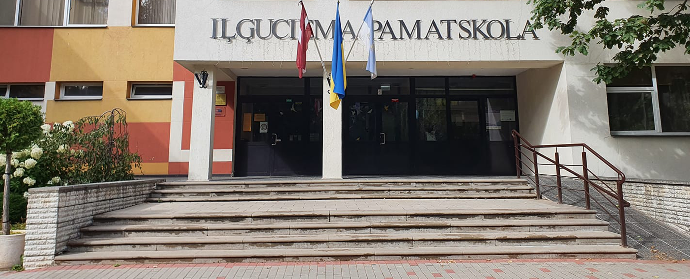

1 / 3
Bērnības Poģestrs Iļģuciemā
2 / 3

Bērnudārzs "Kamolītis"
3 / 3

Rīgas Iļģuciema Pamatskola
Bērnība, augšana, skola un vispārumā sūdi.
Dzimis Rīgā, pus laucinieks, pus pilsētnieks, Aleksis Vilde pavadīja lielu daļu gan Cementa Bloku Džunģļos, jeb Rīgā, gan Jermaku nekurienē, kur jutās tā, ka nebūtu neviena cilvēka viss apkārt. Ģimene lēkāja no dzīvokļa uz dzīvokli, apmeklējot lielu daļu Rīgas rajonu, līdz, kopā ar 3 gadīgu Aleksi, nonāca Iļģuciemā, kur dzīvo līdz šim brīdim. Mazais Aleksis arī daudz lēkājam starp bērnudārziem, savā laikā Iļģuciemā apmeklējot vismazs 3 pirmsskolas iestādes, līdz nonāca "Kamolītī", kur pabeidza pirmsskolu
Pēc pirmsskolas, uzsākās sākumskolas un pamatskolas mācības, un abas tika veiktas Rīgas Iļģuciema Vidusskolā (Tolaik Iļģuciema Vidusskola), kur Aleksis izrādijās kā gudrs, apķērīgs zēns, bet arī iedomīgs. Šajos gados viņš klaidoja apkārt, nesekojot nekam specifiskam, izņemot apstraktu interesi zinātnēs, un pļāpāšanai. Bet arī tad bija redzmas zīmes uzņēmējdarbības, cenšoties izvilkt naudu no klasesbiedriem katrā iespējā, vai tas būtu pārdotot saldumus eksursijā, vai piedaloties ikgadējā mārtiņdienas tirdziņā, vēlāk pat rīkojot pokera un blackjacka spēles skolas bibliotēkā.
Tad, šogad, caur Karjeras projektu, veicot vairākus testus un arī piedaloties karjeras konsultācijā, konkrētākas idejas par karjeru uzņēmējdarbībā spēja uzplaukt, kas dziļāk tiks apskatītas nākamājā sadaļā: Nākotne.